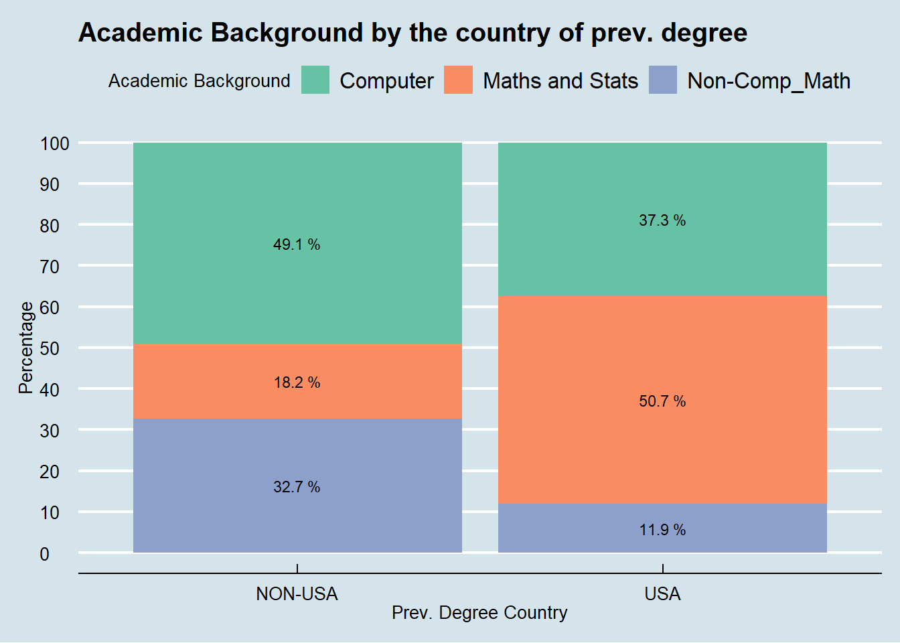
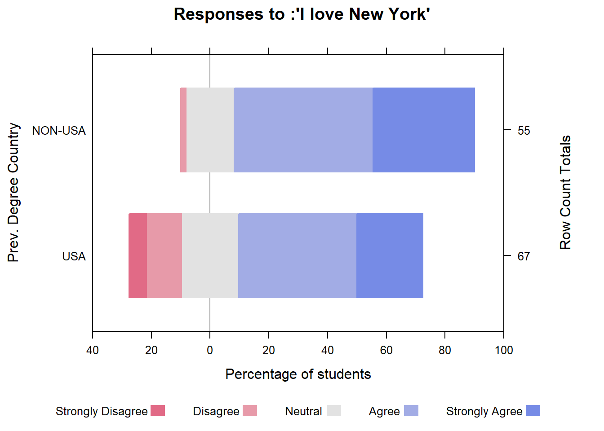
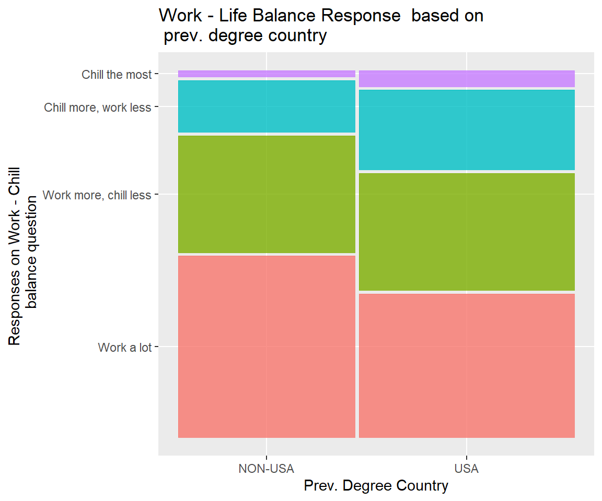

Chapter 5 Results
5.1 Gender
In the following section, we explore the social patterns and interests of our cohort by gender. Though this analysis we hoped to answer a few questions, namely: Are men and women interested in the same industries and research areas? And how does gender influence the way that we congregate and collaborate within the Data Science Institute? Note that survey respondees were given the option to identify as gender non-binary or “prefer not to say”. Because no participant selected these options, we were able to perform our gender analysis from the strict bipartition of male and female.
5.2 Academic Background
5.3 Students w/ Previous Degree in US/International
5.3.1 How does the location of one’s previous study affect how they are dealing with the pressures of attending graduate school in NYC?
5.3.1.1 Introduction:
Adjusting to life in New York City can be difficult for anyone. But imagine having to make that adjustment while matriculating through a graduate-level curriculum at an Ivy League institution! With this in mind, we included a couple likert questions in our survey to gauge how well students were adjusting. How do students who have previously studied in the United States fair alongside their international peers with regard to life in the city and maintaining a healthy work-life balance?
5.3.1.1.1 Stacked Bar Chart (Background breakdown by prior institution):

To provide some background information and frame the discussion and analysis in this section, the stacked bar chart above visualizes the breakdown of academic background of the surveyed DSI students grouped by the location of their prior institution. Notice that a greater proportion of students with a Mathematics/Statistics background came from an institution in the United States. With respect to the surveyed students who came from an international university, we observed a greater proportion of respondents with a computing background.
5.3.1.2 Analysis
5.3.1.2.1 I love New York City:
## [1] "USA" "NON-USA"
A priori, we would have expected American students, being native to the country, to have a higher affinity for life in the city. However, our data shows that the opposite is actually the case. Responses from students who studied internationally were reasonably skewed to “Strongly Agree” with absolutely no students in the group answering “Strongly Disagree”.
5.3.1.2.2 Chill Mosaic:

We found overall that students who have done their previous education in the US are “chillin’” somewhat more than students coming from overseas. Why would this be? Perhaps, domestic students are more accustomed to the culture of American institutions. Another possible explanation for this disparity could be that credit-hour and work-study requirements are stricter for students with previous degress in international institutes.
5.1.2.2.2 Social Network Graph
The following applet is an interactive visualization of the social connections within our Exploratory Data Analysis and Visualization class. Each node represents a person within our class. Men are light blue and women are pink. The gray nodes are people who did not fill out the survey. A directed edge from node A to node B represents person A listing person B as social connection in their survey. The nodes that are disconnected from the large network were people who did not list any connections. By moving the cursor over a node, the user can see the country where the person completed their undergraduate education, as well as professional and academic interests. In addition, the user is able to drag nodes to get a better sense of the network structure. Be patient! The network takes some time to load.